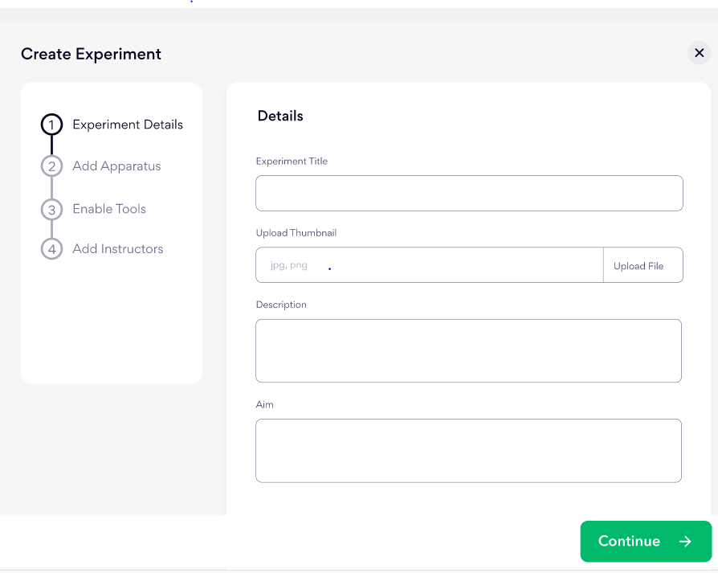

Documentation page
Docs overview Vlab Docs 1.00
Add an experiment
After a course has been created, the course instructor/lecturer is expected to add an experiment to the course in order to further strenghthen the student understanding of the course. Below is the interface for adding an experiment.
Track progress of use by students
Student are usually given a specified time to complete an experiment and submit report, the interface below shows how to see progress of students.